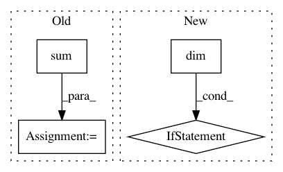

1697ad9a5cb50f61583735f8e442f80fc72a473c,torch_geometric/transform/spherical.py,Spherical,__call__,#Spherical#Any#,9
Before Change
// Compute spherical pseudo-coordinates.
direction = data.pos[col] - data.pos[row]
rho = (direction * direction).sum(1).sqrt()
rho /= rho.max()
theta = torch.atan2(direction[:, 1], direction[:, 0]) / (2 * PI)
theta += (theta < 0).type_as(theta)
phi = torch.acos(direction[:, 2]) / PI
After Change
polar = torch.stack([rho, theta, phi], dim=1)
if pseudo is not None and self.cat:
pseudo = pseudo.view(-1, 1) if pseudo.dim() == 1 else pseudo
data.weight = torch.cat([pseudo, cart.type_as(polar)], dim=-1)
else:
data.weight = polar
In pattern: SUPERPATTERN
Frequency: 3
Non-data size: 4
Instances
Project Name: rusty1s/pytorch_geometric
Commit Name: 1697ad9a5cb50f61583735f8e442f80fc72a473c
Time: 2018-05-12
Author: matthias.fey@tu-dortmund.de
File Name: torch_geometric/transform/spherical.py
Class Name: Spherical
Method Name: __call__
Project Name: OpenNMT/OpenNMT-py
Commit Name: 614c41e7f05d274991d95271c49a87af3fa2cf49
Time: 2017-12-22
Author: skywalker@postech.edu
File Name: onmt/Loss.py
Class Name: NMTLossCompute
Method Name: compute_loss
Project Name: cornellius-gp/gpytorch
Commit Name: 4c6458b841bb49610b5cf6b9fbab94df5cad85ee
Time: 2019-01-23
Author: gpleiss@gmail.com
File Name: gpytorch/lazy/toeplitz_lazy_tensor.py
Class Name: ToeplitzLazyTensor
Method Name: _quad_form_derivative